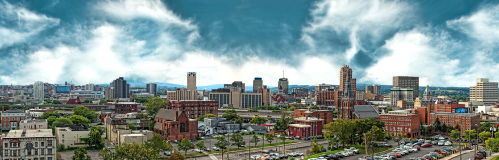

Welcome to Syracuse New York!

Syracuse, known as the "Salt City" is a city located in upstate New York Syracuse is known for its history, culture, and beautiful landscapes.

Syracuse, known as the "Salt City" is a city located in upstate New York Syracuse is known for its history, culture, and beautiful landscapes.
Syracuse gets its name from A post office, established at Webster's Landing in 1820, and was named "Syracuse" for the ancient Greek city in Sicily. Before then it was formerly territory of the Onondaga nation, indians of the Iriquois. A treaty with the indians in 1788, gave the state of New York control over the brine springs founded earlier by Father Simon Le Moyne(1654). The salt lands were leased for extraction giving the name "Salt City" its historic background.
For more Information click : Syracuse, New York - History
Now, Syracuse is known more for Syracuse University; located in the heart of the city, as well as Armory Square.